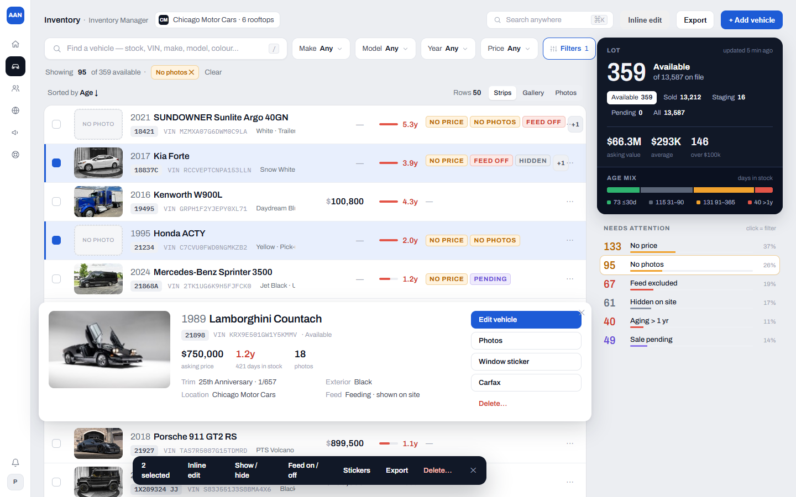
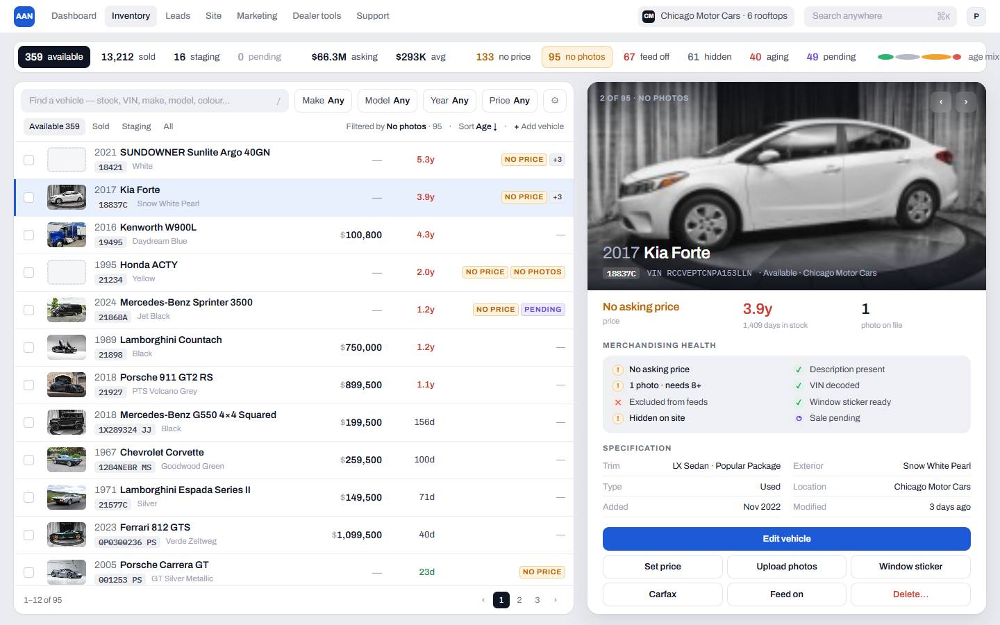
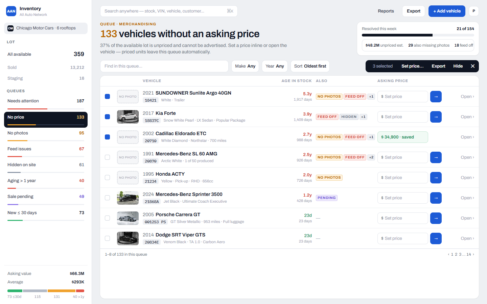

The inventory is the canvas; intelligence objects sit beside the work; the selected vehicle lifts out of the list in place.

Persistent split: dense browser left, the selected vehicle commands the right; intelligence is a single filter ribbon.

Operational lenses are the navigation and the analytics; the list is a queue shaped by the active lens.
